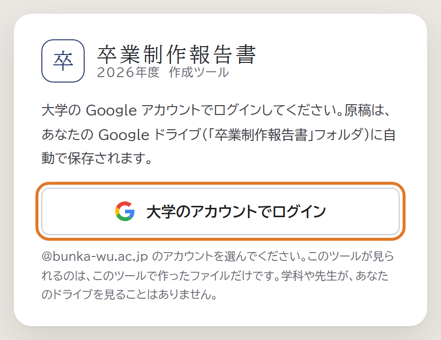
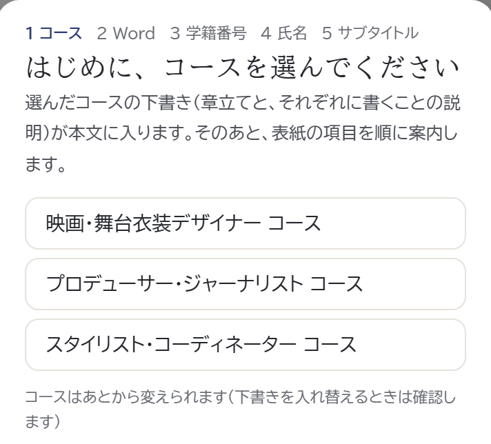
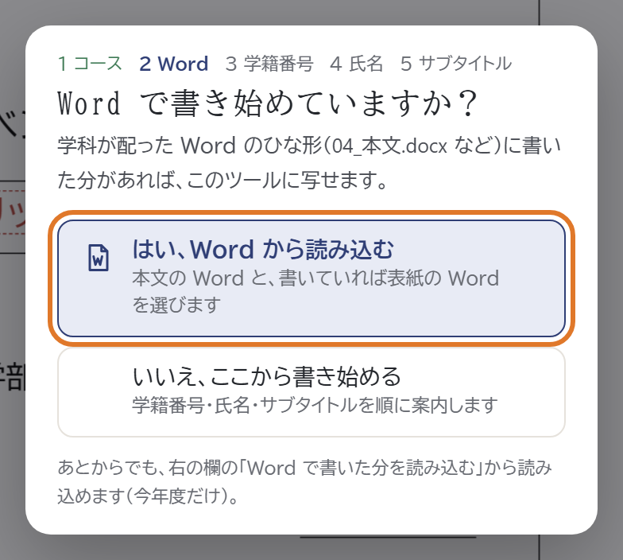
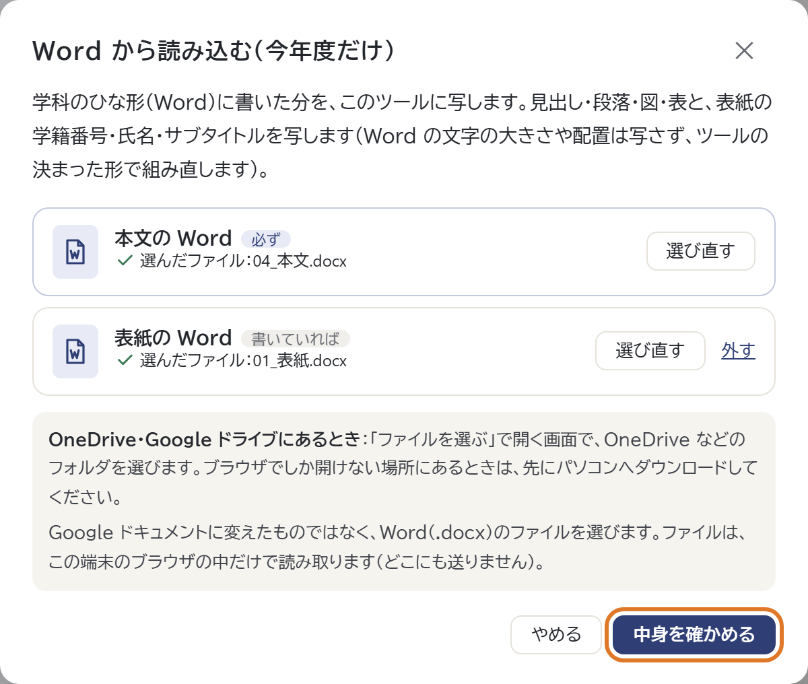
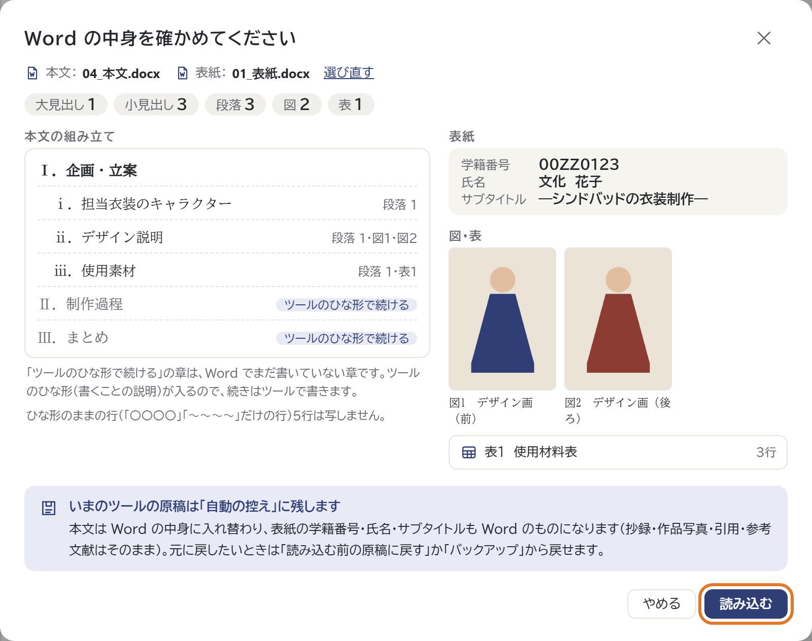
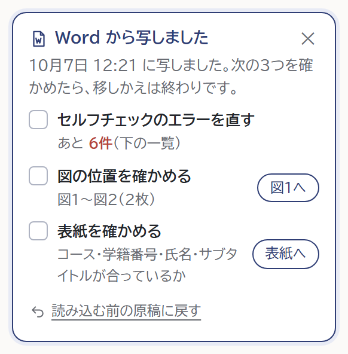

卒卒業制作報告書 国際ファッション文化学科 今年度だけのお知らせ
Word で書き始めた人へ報告書作成ツールへの移り方（今年度だけ）
学科の Word のひな形に書いた分をツールに写して、そこから先はツールで書き進めます。
ツールの URLhttps://junnosukekato.github.io/sotsugyo-seisaku-report/
スマホで開く
11月2週目ごろの途中点検の前まで（11月日（）まで）に、ツールに移してください。
移り方画像ののところを押します
-
1ツールを開いてログイン

大学の Google アカウント（@bunka-wu.ac.jp）でログインします。
-
2コースを選ぶ

はじめて開くと、表紙の上に案内が出ます。自分のコースを選びます。
-
3「はい、Word から読み込む」

「Word で書き始めていますか？」と聞かれたら、「はい」を押します。
-
4Word を選んで確かめる

本文（04_本文.docx）は必ず、表紙（01_表紙.docx）は書いていれば選びます。
-
5確かめて「読み込む」

章立て・図・表の数と表紙の項目が出ます。読み取れなかった所は上に出ます。
-
6「つぎにすること」を済ませる

右の欄（スマホはチェックの欄の上）に出る3つを済ませたら、終わりです。
気をつけること
- .doc（Word 97-2003）は読めません。Word の「名前を付けて保存」で「Word 文書（*.docx）」にします。
- Google ドキュメントに変えないで。図のタイトルや位置が崩れることがあります。.docx のまま選びます。
- スマホでも選べます。OneDrive・Google ドライブ・iCloud Drive の中からも選べます（iPhone は「ファイル」アプリの「ブラウズ」）。読み込んだあとの見直し（図の位置など）は、パソコンで。
- 読み込んだあとは、ツールで書く。ツールの原稿を Word に戻すことはできません。
知っておくと安心
- 写すのは中身だけ。見出し・段落・図（写真とタイトル）・表と、表紙の項目。見た目はツールの形に組み直します。
- 書いていない章は写しません。〇〇〇〇・～～～のままの章は、ツールのひな形で続けます。
- 元に戻せます。読み込む前の原稿は控えに残り、「読み込む前の原稿に戻す」で戻せます。
- 自動で保存。原稿はブラウザと自分の Google ドライブに保存。Word のファイルはどこにも送りません。
- あとから読み込むときは、右の欄（スマホはメニュー）の「Word で書いた分を読み込む（今年度だけ）」から。